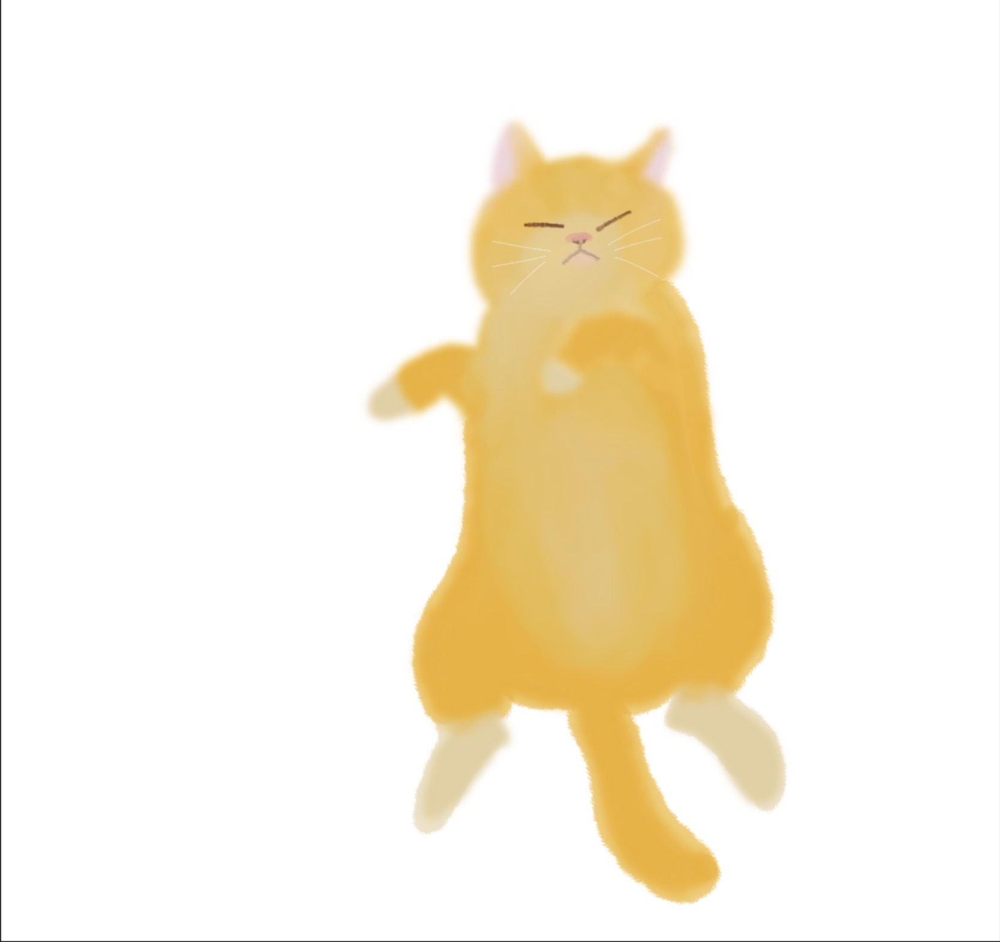

Hi, I'm Eliya! I'm currently a second-year student majoring in Foreign Languages and Literature in NTHU. I'm also double majoring in Economics. Because of the double major, I still need to take about 70 more credits. Therefore, I'm expected to graduate in my fifth year . Drawing is one of my hobbies, and the two pictures below are some of my previous artworks. Although I haven't had much time to draw lately, I still sometimes doodle little sketches secretly in my textbooks during class.
